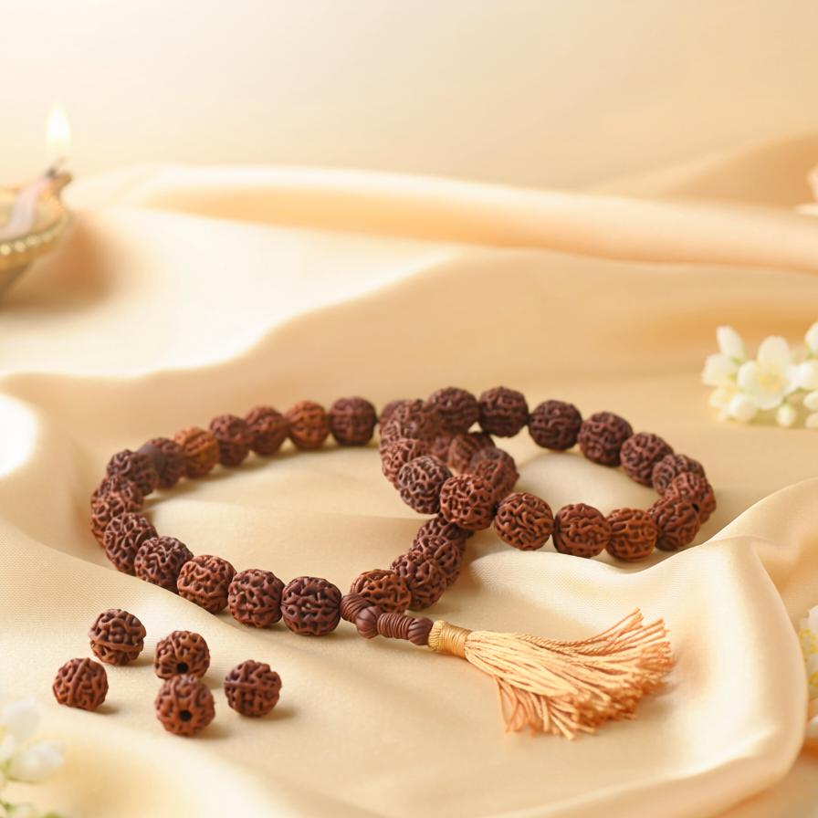
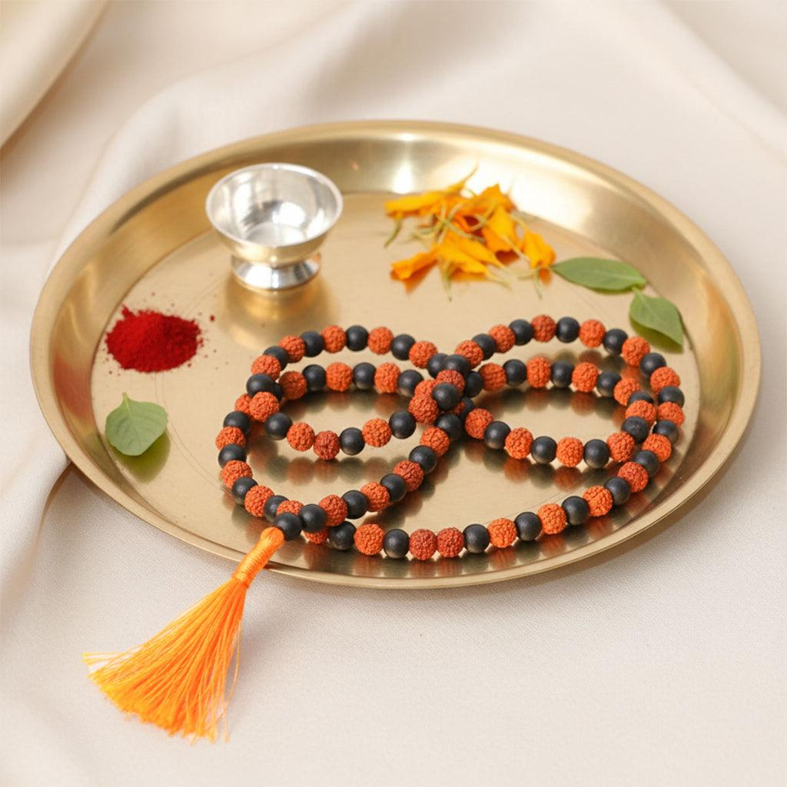
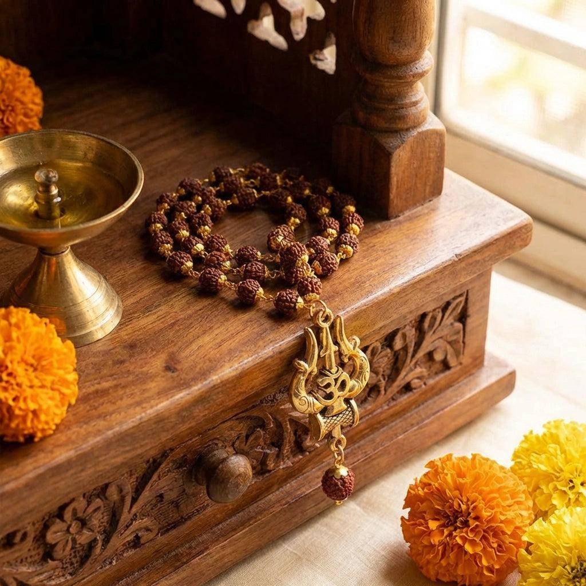

Traditional Collection
Traditional Malas
Explore traditional bead designs and learn about their devotional and cultural associations.
Explore ProductsSabari Craft
Tradition · Devotion · Craftsmanship
Preparing your experience
Welcome to Sabari Craft
Discover traditional devotional malas, beautiful bead designs, and the cultural stories associated with each collection. Sabari Craft brings our growing collection together in one place.
70+
Product varieties
3+
Sub-varieties per product

Tradition • Faith • Craftsmanship

The story behind our brand
Sabari Craft is a devotional products brand inspired by South Indian traditions and the importance of malas in religious practices.
Our collection includes different designs, colours, materials and sub-varieties. We want customers to explore these products easily and understand the traditional significance associated with each one.
Through our website, we aim to bring product discovery, clear information and devotional stories together in one convenient shopping experience.
Read Our StoriesMore than a product
Discover the cultural traditions, devotional practices and sacred meanings behind every mala in our collection — stories passed down through generations.
Read Our Stories Our Stories
Our Stories
Explore our collection
Browse traditional designs, decorative collections and different bead styles in the Sabari Craft catalogue.
Traditional Collection
Explore traditional bead designs and learn about their devotional and cultural associations.
Explore ProductsMultiple Designs
Discover different bead colours, combinations, finishes and decorative styles.
View Collection
Devotional Traditions
Read about religious traditions, cultural meanings and the stories associated with different malas.
Read StoriesWhat matters to us
We want Sabari Craft to be a helpful place for customers looking for devotional malas and information about their traditional significance.
We aim to present religious stories and traditional associations accurately and respectfully.
We want customers to explore different designs, materials, colours and sub-varieties.
We aim to provide clear product details, accurate pricing and helpful customer support.

Discover Sabari Craft
Explore our collection and discover the designs and traditions behind each product.